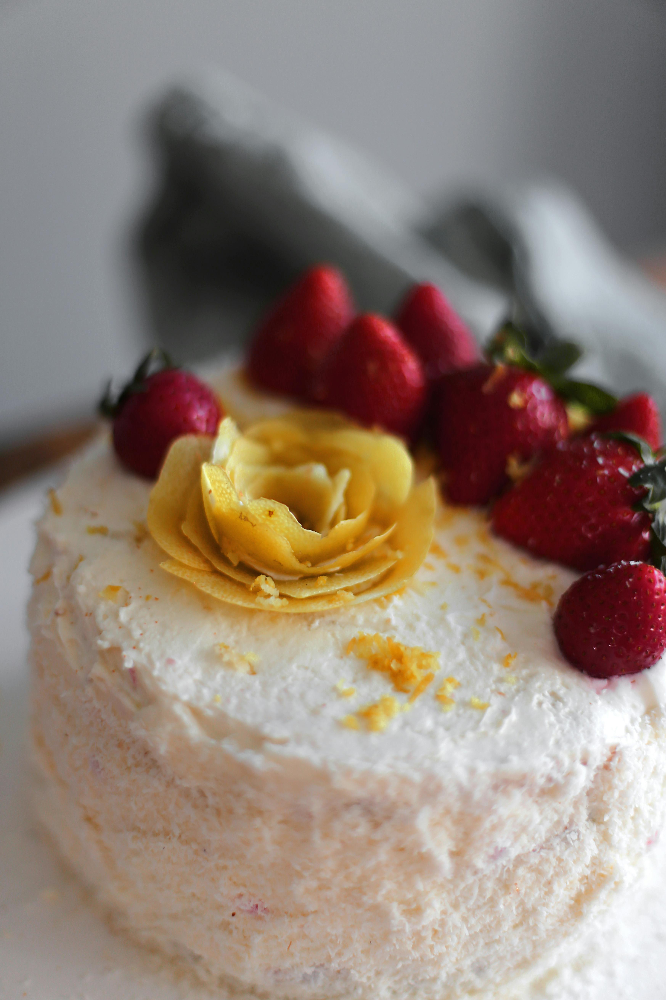

Home
Strawberry Lemonade Poke Cake

Description
This sensational strawberry poke cake is made with cake mix and strawberry Jell-O and finished
with a creamy lemon topping. Add whole or sliced strawberries just before serving if you like.
Ingredients
- cooking spray
- 1 (15.25 ounce) package lemon cake mix
- 2 cups water, divided
- 3 large eggs
- ⅓ cup vegetable oil
- 1 lemon, zested and juiced
- 1 (3 ounce) package strawberry-flavored gelatin mix
- ¼ cup cold water
- ½ cup milk
- 1 (3.4 ounce) package instant lemon pudding mix
- 1 (8 ounce) container frozen whipped topping (Cool Whip), thawed
- whole or sliced strawberries
Steps
- Preheat the oven to 350 degrees F (175 degrees C). Grease a 9x13-inch baking dish with cooking spray.
- Beat cake mix, 1 cup water, eggs, oil, lemon zest, and lemon juice in a large bowl with an electric mixer on low speed until moistened. Increase speed to medium and beat for 2 minutes. Pour batter into the prepared baking dish.
- Bake in the preheated oven until a toothpick inserted into the center of cake comes out clean, 21 to 26 minutes. Use a fork or chopstick to poke holes in cake; set aside.
- Pour remaining 1 cup water into a small saucepan; bring to a boil. Stir in strawberry gelatin mix until dissolved. Mix in 1/4 cup cold water. Pour over cake. Refrigerate soaked cake until completely cool, at least 1 hour.
- Make topping: Whisk together milk and lemon pudding mix in a bowl until slightly thickened. Fold in whipped topping.
- Frost cooled cake with topping; store in the refrigerator. Top with whole or sliced strawberries when ready to serve.